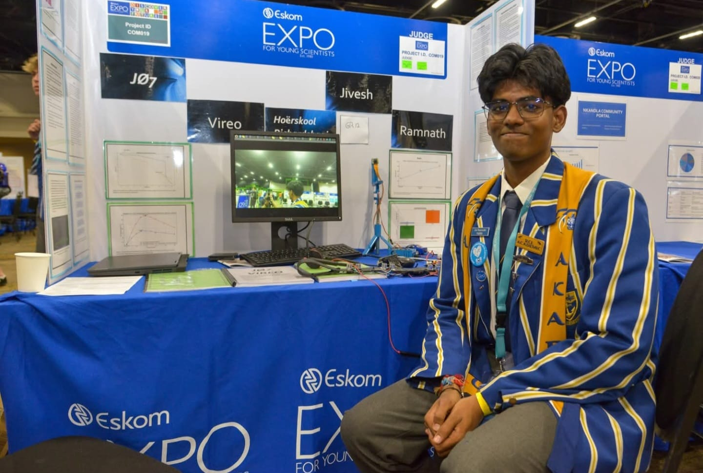

IRIS Silver Medal
International recognition for JØ7 Vireo in computer science.
I’m Jivesh Ramnath — a computer science and statistics student engineering machine-learning systems that have to survive real hardware, real constraints and real users.

BUILDCurrent trajectory: autonomous rover navigation, crash-risk modelling and the next generation of JØ7 Vireo.
Scroll to navigateThe common thread is deployment: constrained compute, uncertain environments, limited budgets and measurable outcomes.
Offline wearable vision using object detection, distance awareness, voice feedback and haptics.
02Six-wheel Ackermann rover, simulated perception and target-seeking autonomy under competition constraints.
03A South African crash-risk model designed to estimate high-risk hours and road segments.
I work across the full path from dataset to decision, then into the physical world.
Competition results are not the goal. They are useful evidence that the engineering holds up under scrutiny.
International recognition for JØ7 Vireo in computer science.
Regional gold and top innovation recognition.
Overall African win with repeat Best Design recognition.
Cybersecurity and farm-security systems built under time pressure.